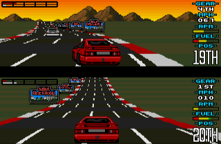

Hauptschule → Realschule → FOS → FH → TU → CSC → BMW.
Warum das für mich genau richtig war.
Die Chancen durch KI & Vibe Coding — und warum „such dir was Sicheres“ heute der falsche Rat ist.
Ich wusste lange nur, was ich nicht will. Das Interesse an IT wurde mein Kompass.
▸ Klicke auf eine Station, um die Geschichte dahinter zu sehen.
Die Chancen mit KI.
Demokratisierung der Entwicklung durch Vibe Coding.
Heilung bisher unheilbarer Krankheiten, Krebs, Alzheimer & Parkinson, personalisierte Medizin. Medikamente in Monaten statt Jahren. Bsp.: AlphaFold, KI-Antikörper, neue Antibiotika.
KI als Co-Wissenschaftler: Hypothesen entwickeln, Millionen Studien auswerten, Simulationen & Experimente planen — neue Materialien, Batterien und Medikamente schneller.
Kernfusion, intelligente Stromnetze, bessere Batterien, effizientere Solar- & Windparks — davon profitiert praktisch jede Industrie.
Ein persönlicher KI-Lehrer für jeden: eigenes Tempo, beliebig oft erklärt, in jeder Sprache, fast kostenlos — Bildung weltweit demokratisiert.
Das ist eure Welt — und ihr könnt sie mitgestalten.
| Unternehmen | Personal | Rolle von KI | Effekt auf Gehälter |
|---|---|---|---|
| Block (Square) | ~4.000 Entlassungen (~40 %) | KI → kleinere, produktivere Teams | Retention bis ~+75 % für Schlüsselkräfte |
| Klarna | 5.527 (2022) → ~2.900 (2025) | KI ersetzt nicht nachbesetzte Stellen | Ø ~126k $ → ~203k $ (~+60 %) |
Ehrlich: Klarna räumte später ein, dass zu radikaler KI-Ersatz die Servicequalität senkte — und stellt wieder Menschen ein.
| Studie | Auswirkung | Gehaltseffekt |
|---|---|---|
| Exotec (2025) | 49 % der Lagerarbeiter: Lohn ↑ durch Automatisierung | + Beförderungschancen |
| Gusto · KI-Rechenzentren | Facharbeiter verdienen mehr | +7,1 % Median · +20 % Klempner |
| MIT (Autor & Thompson) | Zahl der Buchhalter −⅓ | reale Stundenlöhne ~+40 % |
| Dallas Fed (2026) | KI-Sektoren schrumpfen leicht | Löhne +16,7 % vs. +7,5 % national |
| Google/Ipsos (2026) | nur 5 % sind „AI-fluent“ | 4,5× höhere Chance auf mehr Lohn |
Die gute Nachricht: Wer lernt, mit KI zu arbeiten, hat die besten Karten.
Fachanwender beschreiben in natürlicher Sprache, was sie brauchen — die KI baut die Software. Was früher ein Team über Wochen baute, entsteht heute in Stunden.

Bild fehlt:Jeder kann sich heute seine eigene Anwendung selbst bauen — ohne Vorwissen, mit minimalem Budget.
342 Berufe, 143 Mio. Jobs (US-Daten). Kachelgröße = Beschäftigung, Farbe = KI-Betroffenheit.
Als James Watt die Dampfmaschine um 1770 effizienter machte, erwartete man weniger Kohleverbrauch. Ökonom William Stanley Jevons beobachtete 1865 das Gegenteil: Weil Kohlekraft billiger wurde, setzte man sie überall ein — der Verbrauch explodierte.
KI macht Coden billiger → also wird mehr Software gebaut, nicht weniger.
Der Bedarf an Menschen für Architektur, Integration und Kundenabstimmung bleibt.
Krisensicherer = physisches Produkt / Dienstleistung + Software. — das kopiert man nicht einfach mit Vibe-Coding.
Denn Mittelmaß wird über kurz oder lang von KI ersetzt. Spitze wird nur, wer für seine Sache brennt.
Die meisten Menschen sehen die Welt zu negativ. In Roslings 13-Fragen-Quiz schneiden Menschen im Schnitt schlechter ab als ein Schimpanse, der zufällig rät — Schuld ist unser eingebauter Negativitäts-Instinkt.
Die Welt kann gleichzeitig schlecht sein UND besser werden:
| Thema | Früher | Mitte | Heute | Trend |
|---|---|---|---|---|
| Extreme ArmutAnteil in extremer Armut | 1800: 85 % | 1997: 29 % | 2024: 10 % | ▼ |
| KindersterblichkeitTod vor dem 5. Geburtstag | 1800: 44 % | 1990: 9,3 % | 2024: 3,7 % | ▼ |
| LebenserwartungJahre, weltweit | 1800: 30 | 1950: 45 | 2024: 73 | ▲ |
| AlphabetisierungErwachsene, lesen & schreiben | 1800: 10 % | 1950: 40 % | 2024: 88 % | ▲ |
| ImpfungenEinjährige mit ≥1 Impfung | 1980: 22 % | — | 2024: 89 % | ▲ |
| Zugang zu Strommit Elektrizität | 1990: 71 % | — | 2023: 92 % | ▲ |
| NaturkatastrophenTote/Jahr (10-J-Schnitt) | 1930er: 970.000 | 1970er: 100.000 | 2010er: 45.000 | ▼ |
| HIV-Neuinfektionenpro Jahr, weltweit | 1995: 3,3 Mio. | 2017: 1,8 Mio. | 2024: 1,3 Mio. | ▼ |
| GeburtenrateKinder pro Frau | 1800: 6,0 | 1965: 5,0 | 2024: 2,2 | ▼ |
| Sauberes Trinkwassersicher gemanagt | 2015: 68 % | — | 2024: 74 % | ▲ |
Langfrist-Werte aus Gapminder/Factfulness; aktuelle Zahlen 2023–2024 geprüft. Jeder Pfeil = positive Entwicklung.
Florenz, 1490er: Der Mönch Savonarola elektrisierte die Stadt mit Weltuntergangs-Predigten, mobilisierte Jugendbanden und verbrannte 1497 im „Fegefeuer der Eitelkeiten“ Bücher, Kunst und Instrumente. Schon 1498 kippte die Stimmung — er selbst und seine engsten Anhänger wurden hingerichtet.
Habt keine Angst vor der Zukunft: denkt positiv, seht die Chancen, setzt euch Ziele — und geht hinaus in die Welt.